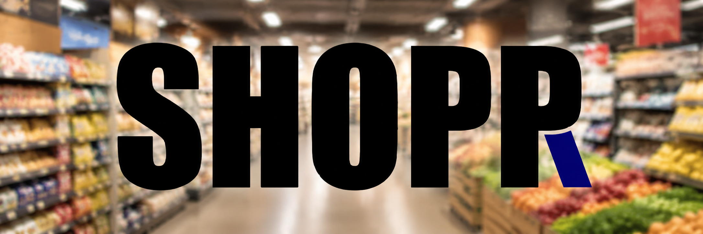

Works in your store
Robots use your current floor plan, shelf heights, and traffic patterns — no greenfield build required.

Robotic fleet automation
We deploy coordinated robotic fleets that work with your aisles, shelving, and back-of-house layout — so you gain efficiency on the floor you already have.
Built for retail reality
Most robotics vendors ask you to change your store. We map your existing layout and deploy fleets that navigate real aisles, real stock rooms, and real peak-hour traffic.
Robots use your current floor plan, shelf heights, and traffic patterns — no greenfield build required.
Multiple robots share tasks, avoid collisions, and hand off work across zones for continuous operation.
Monitor fleet health, task completion, and store coverage from a single control center.
Open the store portalHow it works
We digitize aisles, back-of-house routes, and constraints using your existing store data and a short on-site survey.
Robots are configured for your layout, then rolled out in phases so operations never stop.
Playbooks from your first store accelerate rollout to additional sites in your chain.
The fleet
Our units handle restocking support, inventory checks, and floor monitoring — tasks that matter every hour in a busy store. They communicate as a fleet so coverage stays even when one unit is charging or servicing.
Tell us about your stores and we'll show you what a fleet looks like in your layout.
Get in touch